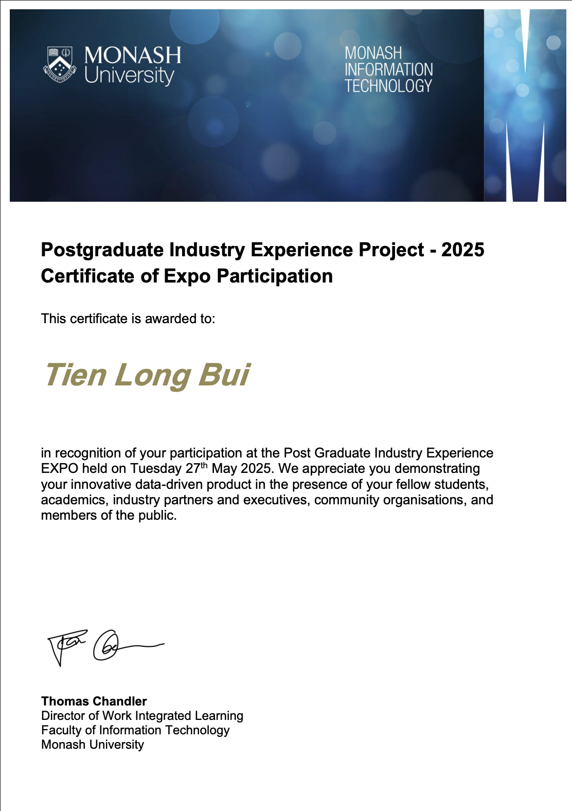

Low-Carbon Lifestyle Platform
Data Analyst | Feb 2025 – May 2025

Overview
This project focused on building a data foundation for a sustainability-oriented platform designed to support low-carbon lifestyle decisions. The work took place in an Agile, sprint-based team environment and required both technical structure and clear handover thinking.
What was the challenge?
A platform like this needed more than just a working prototype. It also needed organised data, maintainable documentation, version control awareness, and enough structure for future teams to continue using and improving the system without losing context.
What I did
- Designed data architecture to support sustainability-related decision-making.
- Considered governance, versioning, and stakeholder feedback in the workflow.
- Prepared handover, support, and maintenance documentation for continuity.
- Contributed to long-term usability of the MySQL-based system.
- Delivered a Streamlit dashboard visualising team dynamics and feedback loops.
Tools & skills
MySQL, Streamlit, Agile, Documentation, Data Governance, Stakeholder Support
Outcome
The project strengthened the long-term usability of the system by combining technical design with practical documentation and structured team support.

Project Video

← Back to Projects